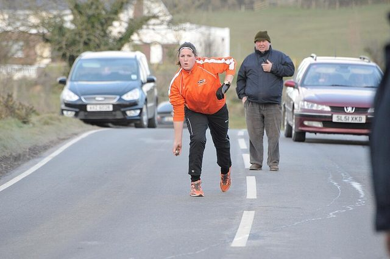
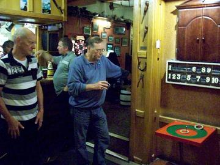
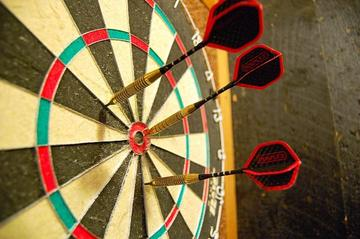

Home / Age of Contact and Craft / Celtic and Atlantic Europe
Encyclopedia ID 819
Road bowling
Also known as Bol Chumann na hÉireann · Bullets · Irish road bowling


Throw a 28 oz iron ball along country roads in fewest throws; Cork and Armagh strongholds.
Heritage note
Part of the living heritage of Ireland.
Origins
Usually placed in the era of Age of Contact and Craft (about 1500 to 1800), although its exact origins are uncertain, within the cultural world of Celtic and Atlantic Europe.
Sources
Related entries


Frisian Road Bowling
Ireland +2 · Dexterity and skill games


Regional pub games
United Kingdom · Street and playground games
More from Ireland

Celtic knot weave
Ireland +1 · Crafts and makingPlay preview · in the Textile Crafts of the World app
Croquet
United Kingdom +2 · Board and table games

Irish Handball
Ireland · Crafts and making
Tartan Sett Weaving
United Kingdom +1 · Crafts and makingPlay preview · in the Textile Crafts of the World appPitch and toss
Ireland · Dexterity and skill games